Welkom!
Deze pagina is gemaakt als eerste opdracht voor de minor Web Design & Development. Op deze pagina zal ik een beetje vertellen over mezelf de opleiding die ik doe en mijn startniveau van deze minor en mijn doelen. Daarnaast geeft deze site een beeld van wat ik tot nu toe kan en heb geleerd op het gebied van web design & development (eigenlijk is dat alles wat te zien is op de pagina).
-

-
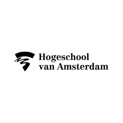
About me
- Naam: Jamie Hart
- Leeftijd: 22
- Geboortedatum: 25-05-2002
- Woonplaats: Wijk aan Zee
- School: Hogeschool van Amsterdam
- Opleiding: Built Environment
Ik ben sportief en ga zo vaak mogelijk naar de sportschool en ik loop regelmatig hard. Mijn familie aan mijn vaders kant komen uit Noord-Ierland en ik ben ook twee-talig opgevoed. Ik kook graag en experimenteer vaak met nieuwe gerechten. Ik vind reizen leuk en mijn eerst volgende vakantie is vanavond naar Oosterijk op skivakantie.
-
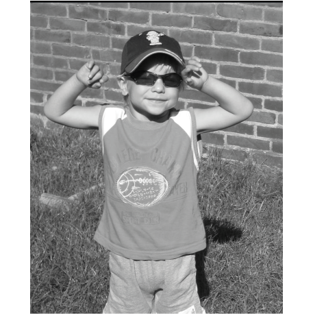
-
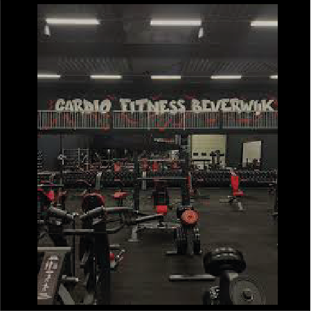
-
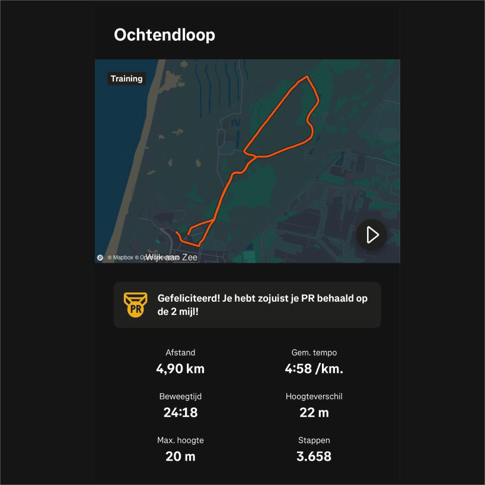
-
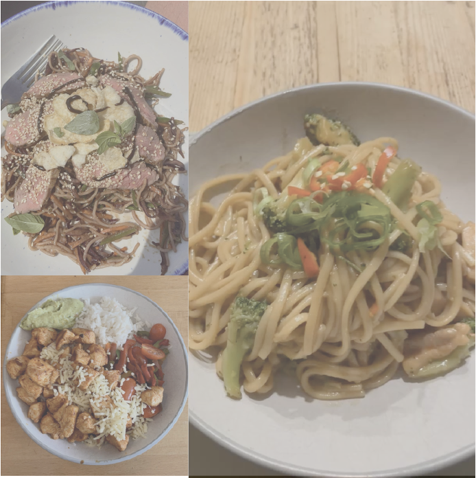
-
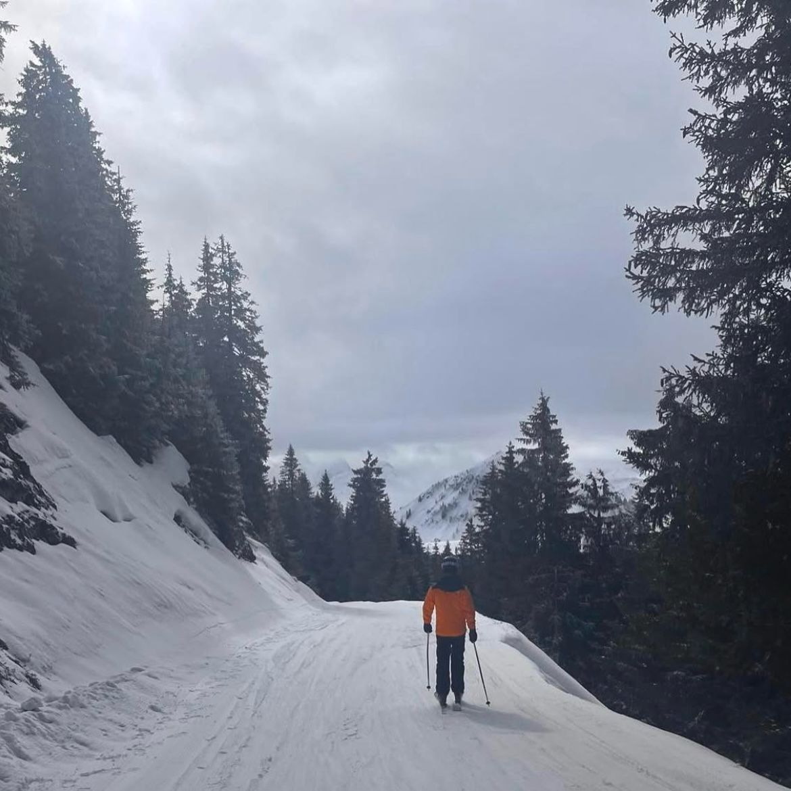
Projecten
Hier wil ik een aantal projecten laten zien van de opleiding Built Envirnoment, waar ik trots op ben.
- Project architectuur: 3D aanzicht villa Amsterdam.
- Project Baaibuurt: Vogelvlucht van het plan voor Baaibuurt in Amsterdam.
- Project Baaibuurt: Plankaart voor het plan voor Baaibuurt in Amsterdam.
- Project Haarlem Haarlem-Oostpoort: Plankaart van het plan voor het gebied in oost Haarlem, rondom de ikea.
Deze projecten staan op volgorde van wanneer ik ze gemaakt heb in mijn 2 jaar op de opleiding, met de eerste het allereerste project op de opleiding en de laatste het laatste project van mijn tweede jaar.
-
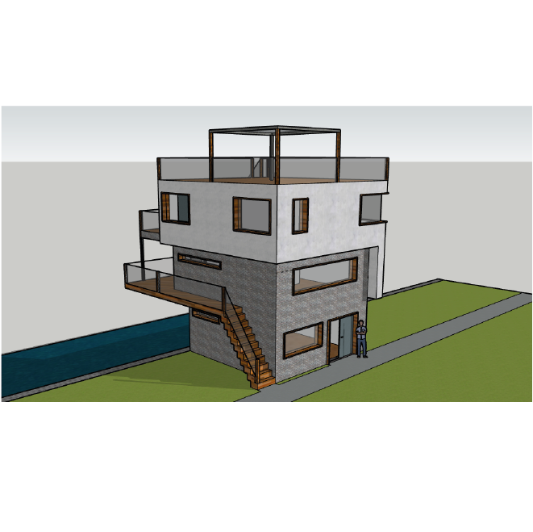
-
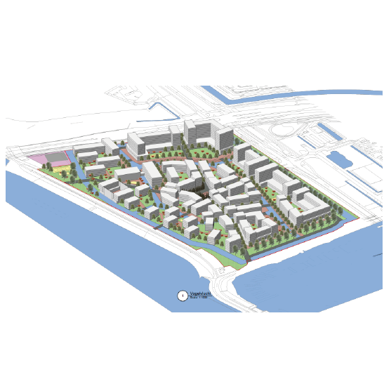
-

-

Doelen
Voor deze minor heb ik een aantal doelen gesteld voor wat ik wil leren en wat ik wil kunnen aan het eind van de minor. De doelen die ik aan het begin van de week had, zijn ook weer anders, omdat ik met heel weinig kennis begon en nu al veel meer weet en kan, en omdat ik nog steeds niet alles weet wat mogelijk is met coderen.
Met de huidige kennis heb ik 3 doelen opgesteld, die rechts te zien zijn en ruimte gelaten voor doelen die er nog bij kunnen komen in de loop van de minor.
-
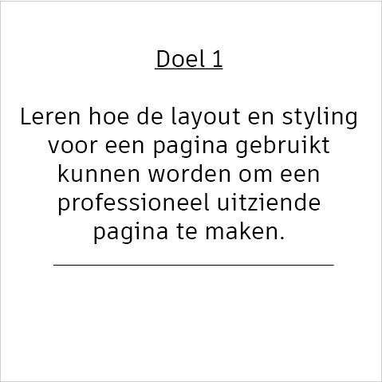
-
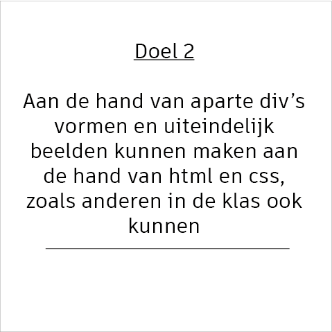
-
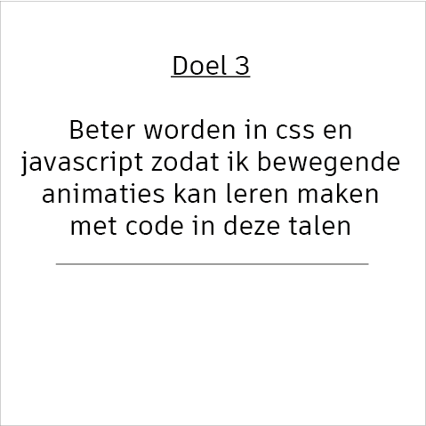